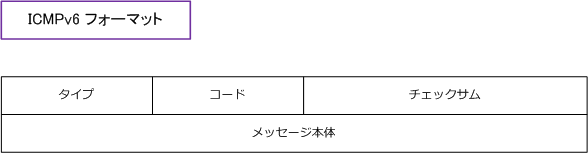
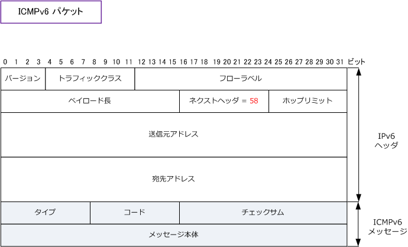

IPv6 - ICMPv6
IPv6 - ICMPv6とは
ICMPv6（Internet Control Message Protocol for IPv6）は、IPv6で使用されるICMPプロトコルのこと。 ICMPv6では、ICMPのエラー通知機能やネットワークの情報収集の機能だけではなくて、ARPに相当する IPv6アドレス解決機能、IPv6アドレス重複検出機能、マルチキャスト機能が含まれています。ICMPv6は IPv4で使用しているICMPとは別のプロトコルであり、IPプロトコル番号が58となります。RFC4443定義。
ICMPv6フォーマット自体は、IPv4で使用するICMPと同じとなります。

実際のIPv6パケットとして転送されるICMPv6パケットとしては、以下の通りのフォーマットとなります。

ICMPv6メッセージは、タイプ0～127のエラーメッセージとタイプ128～255の情報メッセージの大きく 2種類に分類されます。以下ではカテゴリとして3つに分類して、重要なタイプのメッセージを紹介します。
| カテゴリ | タイプ | メッセージ |
|---|---|---|
| エラー | 1 | Destination Unreachable （ 宛先到達不能 ） |
| エラー | 2 | Packet too Big （ パケット過大 ） |
| エラー | 3 | Time Exceeded （ 時間切れ ） |
| エラー | 4 | Parameter Problem （ パラメータ異常 ） |
| 情報 | 128 | Echo Request （ エコー要求 ） |
| 情報 | 129 | Echo Reply （ エコー応答 ） |
| 情報 | 130 | Multicast Listener Query （ マルチキャストリスナクエリー ） |
| 情報 | 131 | Multicast Listener Report （ マルチキャストリスナレポート ） |
| 情報 | 132 | Multicast Listener Done （ マルチキャストリスナダン ） |
| 近隣探索 | 133 | Router Solicitation （ ルータ要請 ） |
| 近隣探索 | 134 | Router Advertisement （ ルータ広告 ） |
| 近隣探索 | 135 | Neighbor Solicitation （ 近隣要請 ） |
| 近隣探索 | 136 | Neighbor Advertisement （ 近隣広告 ） |
| 近隣探索 | 137 | Redirect （ リダイレクト ） |
近隣探索メッセージのICMPv6はマルチキャストアドレスを使用することで次の機能を実現します。つまり、 IPv6ネットワークでは、IPv6の近隣探索メッセージの使われ方の1つとして「IPv6アドレスが他のノードと 重複していないかの検出に使われる」ことが分かります。
Router Solicitation / Router Advertisement
| 機能 | 説明 |
|---|---|
| IPv6アドレスの自動設定 | ノードにIPv6アドレスを自動的に割り当てる機能 |
| IPv6プレフィックスの検出 | 接続リンクのプレフィックスを検出して、直接通信可能なアドレス範囲を識別する機能 |
| ネクストホップの決定 | パケットのネクストホップを決定する機能 |
| パラメーターの検出 | MTUなどの値を検出する機能 |
| ルータの検出 | 同一リンク上でノードが接続できるルータを検出する機能 |
Neighbor Solicitation / Neighbor Advertisement
| 機能 | 説明 |
|---|---|
| データリンク層アドレスの解決 | MACアドレスとIPv6アドレスを関連付けるIPv4のARPに相当する機能 |
| IPv6アドレスの重複検出 | ノードのI/Fに設定したIPv6アドレスが、他のノードと重複していないか検出する機能 |
| 近隣ノードの到達不能の検出 | 近隣ノードの通信不能状態を検出する機能 |